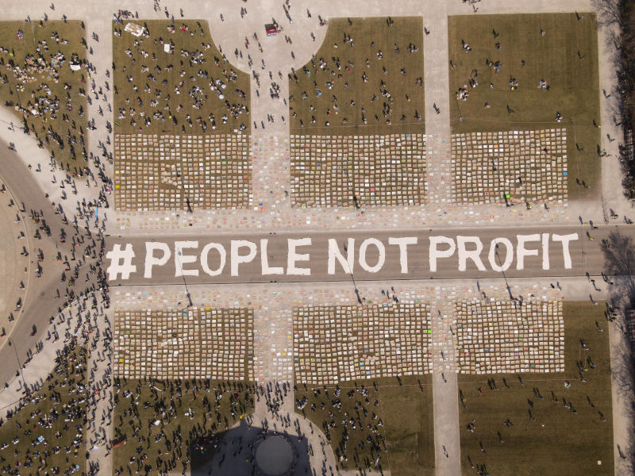

Als globale Bewegung streiken wir seit über drei Jahren freitags für die Einhaltung des Pariser Klimaabkommens und effizienten Klimaschutz.
In München finden unsere Demos immer am ersten Freitag des Monats um 14 Uhr am Marienplatz statt.
Am 23. April findet in Lützerath die Zentraldemonstration statt, bei der wir noch einmal lautstark klar machen: die 1,5°C-Grenze, das Leben von Menschen und auch unsere Zukunft sind NICHT verhandelbar! Lützerath bleibt!
Du hast Lust mit uns im Bus nach Lützerath zu fahren, um genau dies zu zeigen? Melde dich bis spätestens am 15.04 (Freitag) abends an.
Wir fahren gemeinsam mit Aktivist*innen aus Augsburg. Wir treffen uns am Freitag am Münchner ZOB um 08:00 Uhr, bitte seid pünktlich. Am Sonntag den 24.04 geht es zurück. Wir kommen etwa gegen 22 Uhr zurück. Die Plätze sind begrenzt und heiß begehrt. Meldet euch also schnell an. Hin- und Rückfahrt kosten zusammen maximal 50€
Lützerath ist ein weiteres Dorf im Rheinland das für den kurzzeitigen Profit eines internationalen Energiegroßkonzerns zerstört werden soll. Wieso das ganze? Da unter Lützerath Millionen Tonnen an Braunkohle liegen, die der Energieriese RWE verteuern möchte. Das muss verhindert werden, denn werden diese 650 Mio. Tonnen Braunkohle verfeuert, fachen wir dadurch die Klimakrise massiv an!
Das OVG Münster hat sich mit seinem Urteil gegen Lützerath entschieden, da die gesetzlichen Grundlagen für eine anderes Urteil fehlen. Im September soll daher der Hof des letzten Landwirts des Dorfs abgerissen werden. Um dies zu verhindern, muss nun der Druck auf die Politik erhöht werden!
Kommt also alle mit nach Lützerath, wo die 1,5°C-Grenze verläuft.
Kein Problem! Wir sind eine globale Bewegung, in vielen anderen Städten in Deutschland und weltweit gibt es ebenfalls Fridays for Future-Ortsgruppen. Wenn du also gerade nicht daheim bist, schau einfach hier nach wo überall auch gestreikt wird:
Am 25.03.2022 haben wir zusammen mit 2000 Menschen und einem Aktionsbild aus über 3500 Plakaten für mehr Klimaschutz demonstriert.
Um zu zeigen, welche Maßnahmen auf lokaler Ebene nötig sind, um die bundesweiten Forderungen umzusetzen, haben wir Forderungen an die Stadt München gestellt:
Das Landesentwicklungsprogramm ist ein Werkzeug, das die bayerische Staatsregierung nutzt um festzulegen wofür Flächen in Bayern genutzt werden dürfen. Wir haben der Staatsregierung mit GermanZero gezeigt, was wir uns erwarten
Du willst uns mehr oder anders unterstützen, als freitags zu streiken? Wenn du uns bei der Vorbereitung und Umsetzung der Streiks helfen möchtest, spreche einfach freitags eine*n der Order*innen an oder kontaktiere uns über unsere Social Media Kanäle. Außerdem freuen wir uns über Überweisungen für Sticker, Plakate, Flyer, GEMA, Wagen- & Boxen-Miete, etc. auf unser Konto:
| Kontoinhaber: | elinor Treuhand e.V. |
|---|---|
| Kreditinstitut: | GLS Bank |
| IBAN: | DE48 4306 0967 7918 8877 00 |
| BIC: | GENODEM1GLS |
| Verwendungszweck: | ELINORKLXSKQ |
Wichtig: Ohne Angabe des Verwendungszwecks kommt die Überweisung nicht an!
Egal ob Presseanfrage oder Forschungsvorhaben - du kannst uns gerne einfach per Mail anfragen. Wir stehen außerdem auch als Teilnehmer*innen auf Podiumsdiskussionen, für Fachgespräche, Workshops oder Vorträge zur Verfügung.
Dir sind zu wenig Studis auf den Demos? du findest, dass auch die Münchner Hochschulen ihren Beitrag gegen die Klimakrise leisten sollten? du willst, dass auch dort endlich etwas passiert? Dann komm zu Students for Future, dem studentischen Teil unserer Bewegung!
Jeden Donnerstag veranstalten wir unser Klimacafé, wo du einfach mal entspannt über das Klima und die Politik labern kannst; falls dir das nicht reicht kannst du auch gerne Mittwochs beim Plenum vorbeikommen und dich bei uns in die Planung mit einbringen. Oder du kommst einfach Freitags mit uns auf die Demo, bastelst mit uns Banner und Flaggen, organisierst Zubringerdemos zu den Großstreiks …
Um auf dem Laufenden zu bleiben trete unserem Telegram-Channel bei oder folge uns auf Social Media.
Scientists for Future ist ein überinstitutioneller, überparteilicher und interdisziplinärer Zusammenschluss von Wissenschaftler*innen, die sich für eine nachhaltige Zukunft engagieren.
Die Initiative versteht sich als Stimme der Wissenschaft, die zu sachlichen politischen Diskussionen beiträgt und als Brückenbauerin Dialoge fördert und Einsichten ermöglicht. Hierzu führt sie Fähigkeiten, Wissen und Erfahrungen von Wissenschaftler*innen aus verschiedensten Disziplinen zusammen.
Wir sind die Münchener Parents for Future Gruppe, die in Solidarität zur Fridays for Future Bewegung steht.
Wir als Kirchen und kirchliche Organisationen zollen den Protestierenden großen Respekt und unterstützen die Anliegen der jungen Generation. Wir bitten daher die Mitglieder unserer Kirchen und kirchlichen Organisationen ihr Engagement für Klimagerechtigkeit sowohl im persönlichen als auch im kirchlichen und gesellschaftlichen Leben deutlich zu verstärken.
Initiiert wurde der Aufruf von dem ökumenischen Netzwerk Klimagerechtigkeit. Über 60 Kirchen, kirchliche Arbeitsbereiche und Organisationen im Ökumenischen Netzwerk Klimagerechtigkeit rufen bereits dazu auf, sich mit der Bewegung „Fridays for Future“ zu solidarisieren, um anzuerkennen, dass die Schülerinnen und Schüler für eine wichtige Sache auf die Straße gehen. Gemeinden sind aufgerufen, für die jungen Menschen zu beten und vor Ort den Kontakt zu suchen, um herauszufinden, wie Kirche sie im Einzelnen konkret unterstützen kann.
Mehr Informationen gibt es auf der Webseite des Ökumenischen Netzwerk Klimagerechtigkeit.